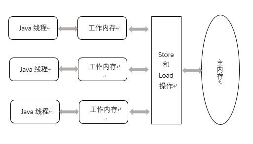
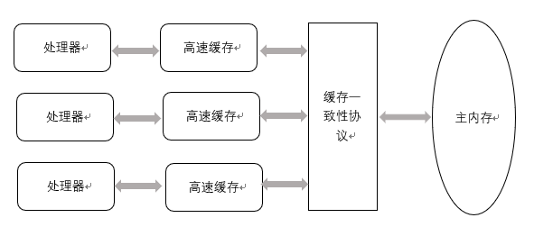

Java指令重排序
Java内存模型允许编译器和处理器对指令重排序以提高运行性能，并且只会对不存在数据依赖性的指令重排序。但是指令重排在多线程程序中可能会出问题。
主内存与工作内存
Java虚拟机规范中试图定义一种Java内存模型来屏蔽掉各种硬件和操作系统的内存访问差异，以实现让Java程序在各种平台下都能达到一致的内存访问效果。（C/C++直接使用物理硬件和操作系统的内存模型，因此可能会由于平台差异导致同一份代码无法正常运行。）
JMM规定了所有的变量都存储在主内存中。注意：
- 此处的变量不包括局部变量与方法参数，因为它们是线程私有的。
- 此处的主内存与硬件的主内存不同，此处仅是JVM内存的一部分。
每条线程还有自己的工作内存，线程的工作内存中保存了被该线程使用到的变量的主内存拷贝副本（如果是对象，不会拷贝整个对象，只会拷贝某些字段值）。
线程对变量的所有操作都必须在工作内存中进行，而不能直接读写主内存中的变量，不同线程之间也无法访问对方的工作内存。JMM示意图如下：

这与硬件的缓存访问操作很相似：

内存间交互操作
JMM定义了8种操作来完成主内存和工作内存之间的交互，这些操作是原子的、不可再分的。

- lock: 作用于主内存，把一个变量标识为一条线程独占。
- unlock: 作用于主内存，把一个锁定状态的变量释放。
- read: 把一个变量的值从主内存传输到工作内存。
- load: 把read操作得到的值放入工作内存的变量副本中。
- use: 把工作内存变量的值传递给执行引擎。每当虚拟机遇到一个需要使用到变量的值的字节码指令时会执行此操作。
- assign: 把执行引擎接收到的值赋给工作内存的变量。
- store: 把工作内存的一个变量值传输到主内存。
- write: 把store传的值放入主内存的变量中。
内存模型三大特征
Java内存模型是围绕着并发过程中如何处理原子性、可见性和有序性这3个特征来建立的。
原子性
原子性的含义理解：一个操作或者多个操作要么全部执行并且执行的过程不会被任何因素打断，要么就都不执行。
由JMM直接保证的原子性变量操作包括read/load/use/assign/store/write。
如果应用场景需要一个更大范围的原子性保证，JMM还提供了lock和unlock来满足这种需求，对应的更高层次的字节码指令为monitorenter和monitorexit隐式使用这两个操作，反应到代码中就是synchronized关键字的使用，也即synchronized块的操作也具有原子性。也即lock->{read->load->use->assign->store->write}->unlock保证了{}中一连串操作具有原子性。而volatile关键字不满足原子性的原因就是，虽然其通过{assign->store->write}和{read->load->use}满足了可见性，但是只要{read->load->use->assign->store->write}不是原子的，那么一个线程对一个变量的操作就不是原子的。
synchronized关键字经过编译后，会在同步块前后分别形成monitorenter和moniterexit两个字节码指令，这两个字节码指令都需要一个reference类型的参数来指明锁对象（monitorenter含义：获得对象的锁；monitorexit含义：释放对象的锁），比如同步块的this/某个对象，或者synchronized方法对应的实例对象，以及静态synchronized方法对应的类Class对象。
Tip: 通过javap反编译发现，临界区代码后有两个monitorexit字节码指令，是因为如果出现异常退出也需要释放锁。
可见性
可见性是指：当一个线程修改了共享变量的值，其他线程能够立即得知这个修改。
JMM如何实现可见性？
答：volatile，在变量修改后将新值同步回主内存{assign->store->write}，变量使用前从主内存刷新到工作内存{read->load->use}。
Java哪些关键字可以保证可见性？
- volatile
- synchronized: 对一个变量执行lock操作后，从主内存刷新到工作内存{lock->read->load->use}；对一个变量执行unlock操作之前，必须先把变量值同步回主内存{assign->store->write->unlock}。
- final: 被 final 修饰的字段在构造器中一旦初始化完成，那么其它线程就能看见 final 字段的值。
有序性
有序性是指：在本线程内观察，所有操作都是有序的。在一个线程观察另一个线程，所有操作都是无序的，无序是因为发生了指令重排序以及工作内存与主内存同步有延迟。在 Java 内存模型中，允许编译器和处理器对指令进行重排序，重排序过程不会影响到单线程程序的执行，却会影响到多线程并发执行的正确性。
volatile 关键字通过添加内存屏障的方式来禁止指令重排，即重排序时不能把后面的指令放到内存屏障之前。
也可以通过 synchronized 来保证有序性，它保证每个时刻只有一个线程执行同步代码（也即锁的作用），相当于是让线程顺序执行同步代码。
先行发生原则（Happens-Before规则）
先行发生是JMM中定义的两项操作之间的偏序关系，如果说操作A先行发生于操作B，其含义是：B发生之前，A产生的影响能被B观察到。“影响”包括修改了内存中共享变量的、发送了消息、调用了方法等。
JMM中一些天然的先行发生关系如下：
程序次序规则（Program Order Rule）
在一个线程内，在程序前面的操作先行发生于后面的操作。
管程锁定规则（Monitor Lock Rule）
一个 unlock 操作先行发生于后面对同一个锁的 lock 操作。
volatile变量规则（Volatile Variable Rule）
对一个 volatile 变量的写操作先行发生于后面对这个变量的读操作。
线程启动规则（Thread Start Rule）
Thread 对象的 start() 方法调用先行发生于此线程的每一个动作。
线程加入规则（Thread Join Rule）
Thread 对象的结束先行发生于 join() 方法返回。
线程中断规则（Thread Interruption Rule）
对线程 interrupt() 方法的调用先行发生于被中断线程的代码检测到中断事件的发生，可以通过 interrupted() 方法检测到是否有中断发生。
对象终结规则（Finalizer Rule）
一个对象的初始化完成（构造函数执行结束）先行发生于它的 finalize() 方法的开始。
传递性（Transitivity）
如果操作 A 先行发生于操作 B，操作 B 先行发生于操作 C，那么操作 A 先行发生于操作 C。
伪共享
缓存一致性（Cache Coherence）
在多处理器系统中，每个处理器都有自己的高速缓存，而它们又共享同一主内存，如图所示：
当多个处理器的运算任务都涉及同一块主内存区域时，将可能导致各自的缓存数据不一致，那么在同步数据回主内存时该以谁的缓存数据为准呢？为了解决一致性问题，需要处理器访问缓存时都遵循一些协议，也即缓存一致性协议，在读写时根据协议来操作，这类协议有MSI，MESI，MOSI等等。
局部性原理
局部性原理: CPU访问存储器时，无论是存取指令还是存取数据，所访问的存储单元都趋于聚集在一个较小的连续区域中。
时间局部性：如果一个信息项正在被访问，那么在近期它很可能还会被再次访问。
空间局部性：在最近的将来将用到的信息很可能与现在正在使用的信息在空间地址上是临近的。
伪共享
伪共享：多线程下访问同一个Cache行中的多个不同变量时产生。
在Cache内部是按行存储的，其中每一行称为一个Cache行。Cache行是与主内存进行数据交换的单位，其大小一般为2的幂次数字节。
当CPU访问某个变量时，首先会检查CPUCache内是否有该变量，如果有则直接读取，否则就向下级缓存找，直到主内存。然后将找到的变量所在内存区域的一个Cache行大小的内存复制到Cache中。由于存放到Cache行的是内存块而不是单个变量，所以可能会把多个变量存放到一个Cache行中。
由程序运行的局部性原理可知，程序会把变量所在内存中大小为Cache行的内存（地址连续的内存）放入CPUCache中。当多个线程同时写入Cache行中不同的变量时，由于缓存一致性协议，此时只能有一个线程操作Cache行，所以相比将每个变量放到一个Cache行，性能会有所下降，这就是伪共享。以下图为例：

上图中变量x,y所在的内存区域同时被复制到了CPU1和CPU2的Cache行以及二级缓存中，当线程1使用CPU1对x进行更新时，首先修改CPU1Cache1变量x所在的缓存行，此时由于缓存一致性协议，CPU2中变量x对应的缓存行失效，那么线程2在写入变量y时就只能从二级缓存查找了。
在创建数组时，数组里的多个元素就会被放入同一个缓存行，对于单线程程序而言，如果顺序访问数组中的元素，就会充分利用程序运行的局部性原则，从而加速了程序的运行。
避免伪共享
jdk1.8之前一般通过字节填充的方式来避免伪共享，也就是创建一个变量时使用无关字段填充该变量所在的缓存行，这样就避免了将多个变量存放在同一个缓存行中。例如如下代码：
1 | public final static class FilledLong{ |
使用CPU-Z查看发现我的电脑CPU一级缓存行大小为64Byte，由于一个长整型变量占8Byte，那么以上代码变量总共占了56个Byte，其中6个变量48Byte为填充字节，而类对象的字节码的对象头占用8Byte，所以一个FilledLong对象实际会占用64Byte。
jdk1.8提供了一个sun.misc.Contended注解来解决伪共享问题。将上面的代码修改如下：
1 | .misc.Contended |
需要注意的是，默认情况下，@Contended注解只用于Java核心类，比如rt包下的类。如果用户类路径下的类需要使用该注解，则需要添加JVM参数：-XX:-RestrictContended，填充的宽度默认为128，自定义宽度则可以设置-XX:ContendedPaddingWidth。
参考：《深入理解Java虚拟机》 周志明